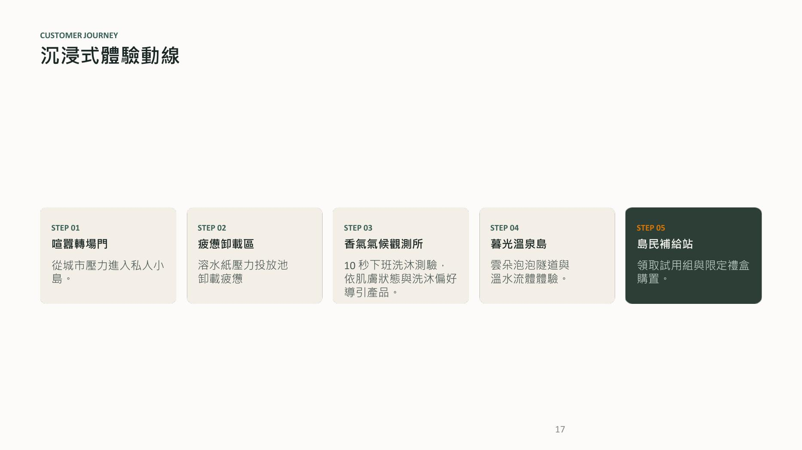

MARKETING STRATEGY
MUYU — Integrated Marketing Strategy
A consumer-centered campaign concept that connects research, personalization, immersive experience, and measurable conversion.

01 — CHALLENGE
Turn an everyday routine into a meaningful brand moment.
The concept focuses on high-pressure urban professionals and positions bathing as a low-friction transition from work mode into personal Me Time, while keeping product and health claims appropriately bounded.
02 — STRATEGY
Insight → Personalization → Experience → Conversion
The strategy combines consumer research with a 10-second product recommendation experience, an immersive pop-up journey, LINE/QR acquisition, product trial, and follow-up conversion design.

03 — CUSTOMER JOURNEY
Designing the “After-Work Island.”
The proposed experience moves through five stages: transition from city noise, symbolic fatigue release, personalized product guidance, sensory product trial, and a final conversion / membership touchpoint.
04 — KPI FRAMEWORK
Targets, not claimed results.
The campaign document defines proposed KPIs for experience volume, LINE member acquisition, on-site conversion, sales, and post-event website conversion. These are planning targets rather than realized campaign results.
05 — DIGITAL EXPERIENCE
Marketing meets implementation.
The project also includes a web-based product recommendation experience. A live-site button and source-code link can be added here once you decide which version you want to publish.
← Back to selected work